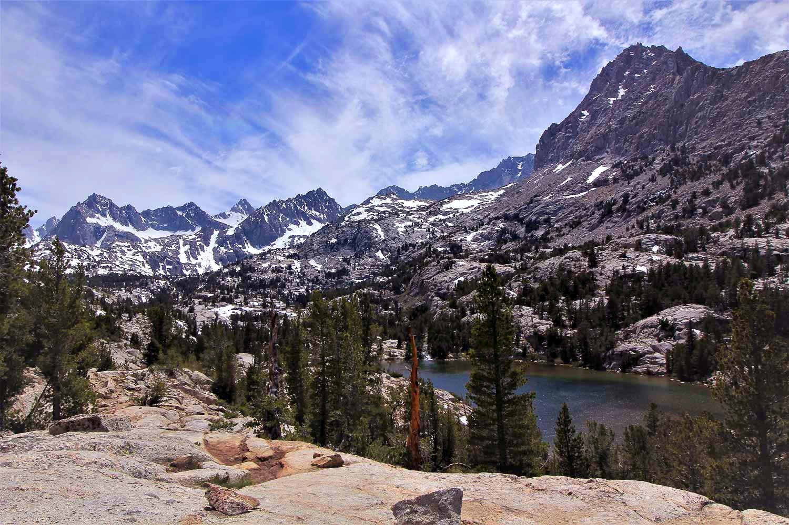
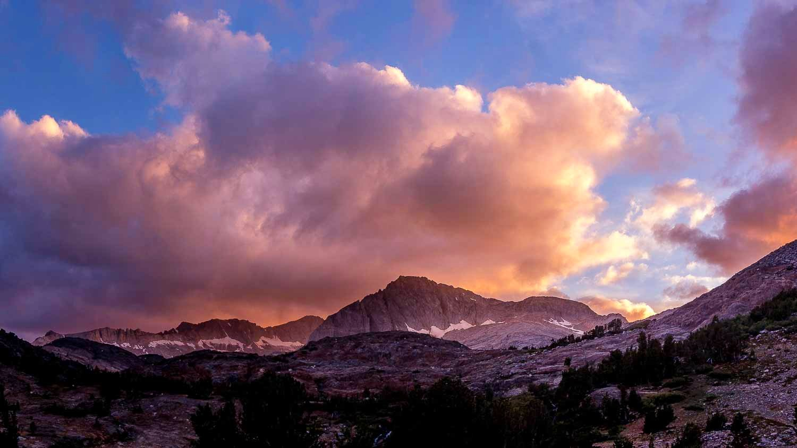
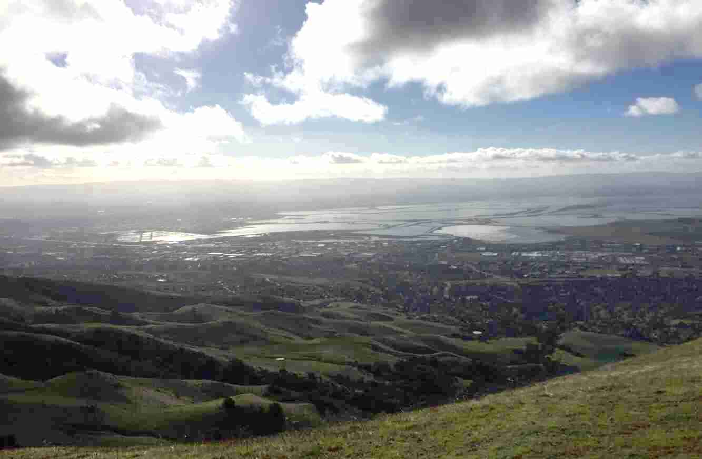

North Peak - Twenty Lakes Basin
I really enjoy backpacking and climbing. The mountains are amazing! You can find a lot of trip reports on this page. (Trips with a [*] are the super cool ones!)- Emigrant Wilderness (August 2014)
-
Ansel Adams Wildn. - Minaret, Iceberg, Ediza Lakes (Jul. 2015)

- Henry Coe State Park (Aug. 2015)
- Emigrant Wilderness (September 2015)
-
Big Sur - Pine Ridge Trail, Big Sur Trail (Jan. 2016)

-
Inyo NF - Sabrina Basin (Jun. 2016)

- Henry Coe State Park (Aug. 2016)
-
Hoover Wildn. - Twenty Lakes Basin (Sep. 2016)

- Diablo Range - J. D. Grant County Park to Mission Peak (Jan. 2017)

- Henry Coe State Park (Mar. 2017)
-
Yosemite - Yosemite Valley (Jun. 2017)

-
[*] Boundary Waters, MN - Northern Tier High Adventure (Jun. 2017)

- Henry Coe State Park (Aug. 2017)
-
Hoover Wildn. - Twenty Lakes Basin (Sep. 2017)
-
Yosemite - Yosemite Valley (Dec. 2017)

-
Big Sur - Arroyo Seco, Coast Ridge Rd. (Apr. 2018)
-
Yosemite - Climbing Mt. Dana (May 2018)

-
[*] Mt. Shasta - did not summit (Jun. 2018)

-
[*] Kings Canyon NP - Great Western Divide Circuit (Aug. 2018)
-
John Muir Wildn. - Bear Lakes Basin (Sep. 2018)

-
Yosemite - Yosemite Valley (Dec. 2018)
-
Tahoe NF - Castle Peak (Apr. 2019)

-
[*] Mt. Shasta - summitted (Jun. 2019)

-
[*] New Mexico - Philmont Scout Ranch (Jul. 2019)

-
Yosemite - Snow Creek, Tenaya Lake, Clouds Rest (Sep. 2019)

Me and my friend Jeffery at Happy Isles!